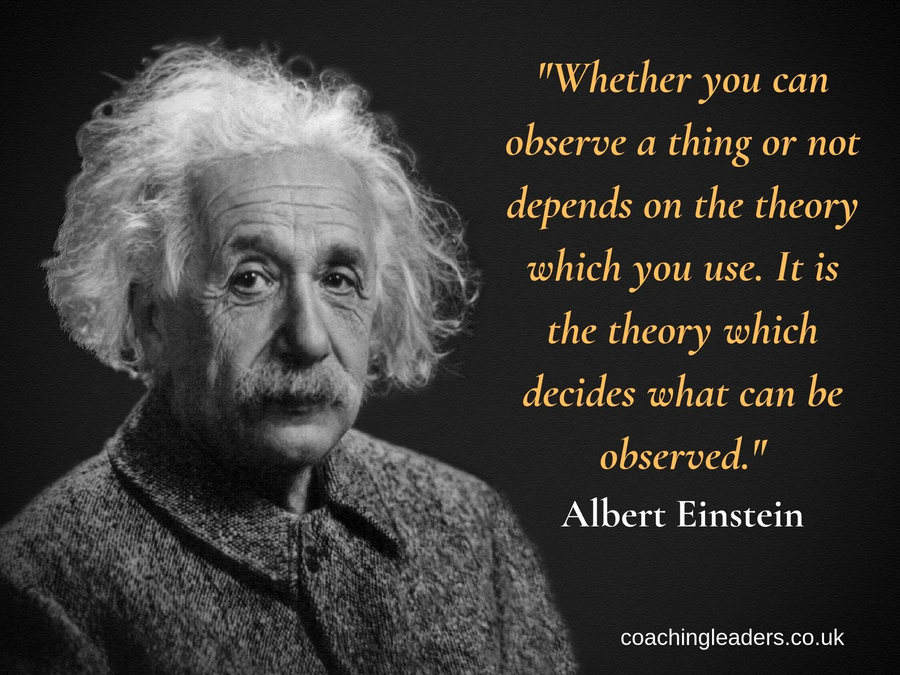

Albert Einstein
(1879 - 1955)

Biography
Albert Einstein was born in Ulm, Wurttemberg, Germany in 1879.
Albert Einstein was a great physicist and scientist of the German Empire.
He pursued diploma from Federal Polytechnic School and Ph.D. from the University of Zurich.
Physics and Mathematics were his favourite subjects from his school days.
His first paper that was published in 1900 made him one of the leading scientists in the world.
In the year 1905, he made a great contribution to physics by discovering the theory of special relativity.
It was 1911 when he proposed his 'General Theory of Relativity'.
For his law of photoelectric effect, he received Nobel Prize in Physics in the year 1921.
Due to an Abdominal Aortic Aneurysm, he died on 18 April 1955.
After his death, he was named as 'Time Person of the Year' in 1999.
Awards and Honors
Nobel Prize in Physics.
Copley Medal
Benjamin Franklin Award
Matteucci Medal
Max Planck Medal
To find information, visit :
Wikipedia
Made by Gaurav Kumar